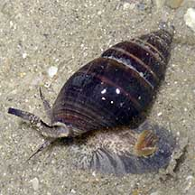
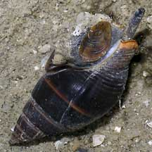
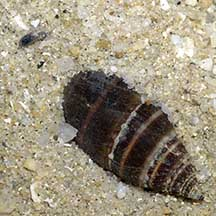
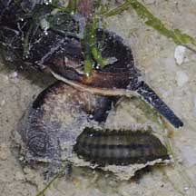
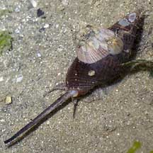

|
|
| shelled snails text index | photo index |
| Phylum Mollusca > Class Gastropoda > Family Nassariidae |
| Olive
whelk Nassarius olivaceus Family Nassariidae updated Aug 2020 Where seen? This large, handsome whelk is usually seen prowling alone on sandy and muddy areas near seagrasses and mangroves. Commonly seen especially on our Northern shores. Features: 3-4 cm. Largest of the commonly encountered whelks on our shores. Shell conical, smooth with spiralling ridges. Colour brown to olive green sometimes with a pale spiral around the shell. Body pinkish with dark speckles and dark edge on the foot, very long siphon and short tentacles. Operculum thin, orange. It has been seen burrowing just beneath the sand, with its siphon sticking out. |
 Changi, Aug 05 |
 Changi, Apr 05 |
 Burrowing just beneath the sand with siphon sticking out. Changi, Aug 05 |
| Hitching on a whelk: This whelk is sometimes seen with a large barnacle or two on the shell. Sometime also a tiny sea anemone. |
|
 Eating a bristleworm. Changi, Feb 10 |
 Sometimes with large barnacles on the shell. Changi, Jun 05 |
| Olive whelks on Singapore shores |
On wildsingapore
flickr
|
| Other sightings on Singapore shores |
Links
|